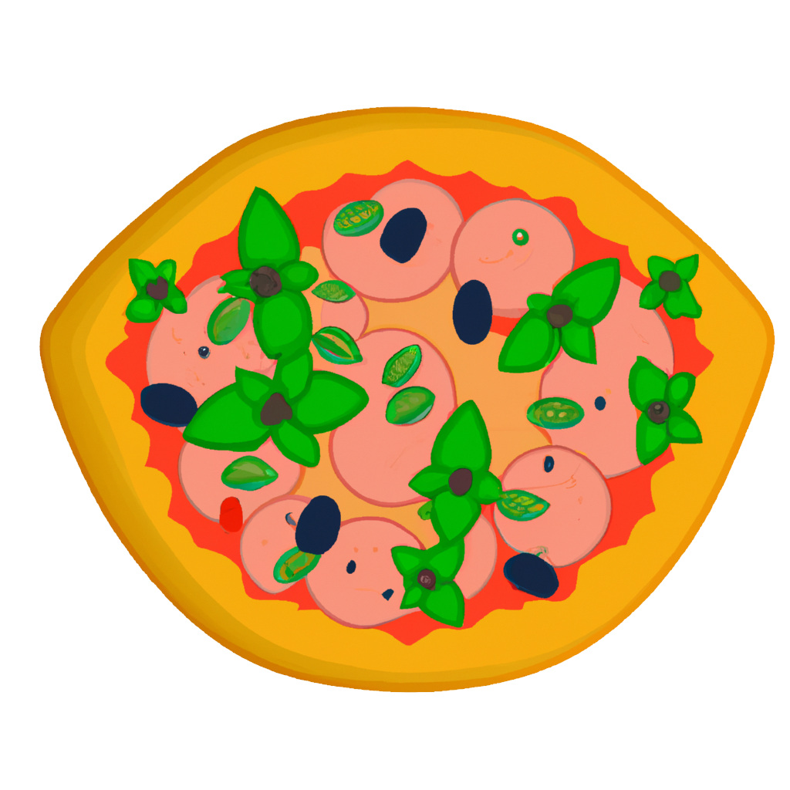

Італійська піца
Історія Італійської піци
Історія італійської піци бере свій початок у Неаполі в 18 столітті. Перші згадки про піцу датуються близько 997 року, коли пекар з городу Гайї описав те, як він підготовлював пластівці хліба з різними начинками. З часом, піца стала популярною стравою у всьому світі, що призвело до розвитку різних видів та начинок. Сьогодні італійська піца є однією з найпопулярніших страв у світі та має безліч регіональних варіацій та спеційних рецептів.

-

Раффаеле Еспозіто
Раффаеле Еспозіто - вважається "батьком" італійської піци, який створив першу піцу Марґарита на честь королеви Італії Марґарити Савойської.
-

Джованні Сантарпіа
Джованні Сантарпіа - піцейоло та власник ресторану "Pizzeria da Giovanni" в Неаполі, який славиться своєю піцею Марґарита.
-

Антоніо Старіта
Антоніо Старіта - відомий в Неаполі майстер піци, який має власну піцерію, що відома своєю традиційною неаполітанською піцою та інноваційними стравами.
Найпопулярінші піци
-
Марґарита
-
Неаполітанська
-

Капрічьоза
Чому варто додати піцу в свій раціон?
Є кілька причин, чому додавання піци до раціону може бути корисним:
1) Джерело харчових речовин: Піца може бути джерелом різних харчових речовин, включаючи білки, вуглеводи,
жири, вітаміни та мінерали. Наприклад, томатний соус містить вітамін С, моцарела - білки та кальцій, а
овочі, які можуть бути додані до піци, - різні вітаміни та мінерали.
2) Смачний спосіб збалансувати раціон: Якщо правильно підібрати інгредієнти, то піца може бути смачним та
збалансованим способом збагатити свій раціон.
3) Зручність та доступність: Піца є досить доступним та зручним варіантом їжі, що може бути швидко
приготована та подана, що особливо важливо в сучасному ритмі життя.
4) Радість та задоволення: І, нарешті, піца може бути просто смачним та задовільним джерелом радості та
задоволення, що важливо для нашого психологічного та емоційного благополуччя.
Важливо враховувати, що піца також може бути висококалорійною та містити багато жирів та солі, тому
рекомендується споживати її у помірних кількостях та включати в раціон з різноманітними іншими
продуктами.